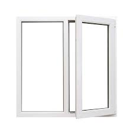
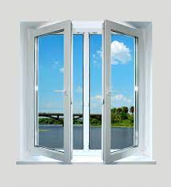

Alyumin va PVH derazalarining afzalliklari
Binolarning yoritilishi asosan xonadagi derazalarning o
'lchamiga, shakli va joylashishiga bog'liq. Kvartiralarning
turar-joy xonalarida normal yoritishni ta 'minlash uchun derazalar
maydoni polning 1/8 qismidan 1: 5,5 dan oshmasligi kerak.
Fasaddagi derazalarning shakli, o'lchami, nisbati va joylashishi
binoning me 'moriy ko'rinishiga va uning umumiy me 'moriy
ekspressiyasiga sezilarli ta'sir ko 'rsatadigan muhim
elementlardir.
Derazalarning dizayni issiqlik muhandislik talablariga qat'iy
javob berishi kerak - bu nafaqat sovuq mavsumda binolarda
issiqlikni saqlab qolish, balki ko 'zoynakni muzlatish va
tumanlash ehtimolini yo'q qilish uchun ham muhimdir. Bundan
tashqari, derazalarning dizayni tashqi shovqinlardan ovoz
yalıtımını ta 'minlashi kerak.
Windows bitta, ikki yoki uch tomonli oynali bo'lishi mumkin. Bir
qavatli oynali oynalar mamlakatning janubiy hududlarida yoki
isitilmaydigan binolarda ishlatiladi. Turar-joy binolari va boshqa
fuqarolik binolari uchun mo ''tadil mintaqalarda derazalar asosan
ikki qatlamli oynada, ular orasidagi havo bo 'shlig'i bilan o
'rnatiladi. Uzoq Shimoliy hududlarda uchta qatlamli oynalar, ya'ni
ularning orasidagi ikkita havo bo 'shlig'i bo 'lgan derazalardan
foydalanish kerak.
Yog'och derazalarning standart o 'lchamlari va balkon eshiklari
turar-joy va jamoat binolari GOST 11214-65-da keltirilgan. Bir
bargli oynaning kengligi odatda kamida 600 mm, ikki baravar - 900,
1100 va 1300 mm va uch bargli - 1600-1800 mm. Derazalarning
balandligi polning balandligidan 1150-1300 mm kamroq bo'lishi
kerak.
<

